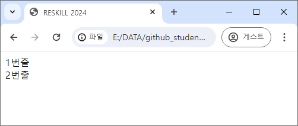
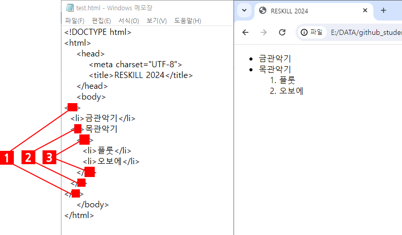

HTML
1. HTML은 무엇의 약자인가?
- High Text Markup Language
- Hyper Text Military Language
- Higher Text Military Language
- Hyper Text Markup Language
2. 주로 태그를 이용해 문서에 정보를 추가해 색이나 굵기 등을 바꾸라는 정보 등 추가 정보를 저장하는 것을 무엇이라 하는가?
- Markup
- MarkDown
- MakeUp
- MakeDown
3. HTML에서 <b> 태그의 기능은?
- 이탤릭체로 보여주라는 신호를 웹브라우저에게 준다.
- 시작 부분에 동그라미 같은 bullet을 보여주라는 신호를 웹브라우저에게 준다.
- 굵은 글씨체로 보여주라는 신호를 웹브라우저에게 준다.
- 취소선을 보여주라는 신호를 웹브라우저에게 준다.
4. 링크를 거는 태그와 속성은?
<a>태그, link 속성<a>태그, href 속성<l>태그, link 속성<l>태그, href 속성
5. 태그에 대한 틀린 말은?
- 열었으면 반드시 닫아야 한다.
- 속성이 여러 개 올 수 있다.
<태그명>의 형태를 가진다.- 닫는 태그는
</태그명>의 형태를 가진다.
6. HTML5 문서의 맨 위에 적어야 하는 문구는?
<!DOCTYPE html5><DOCTYPE='html5'><!DOCTYPE html><!DOCTYPE='html'>
7. 해당 HTML 문서에 대한 다양한 메타 정보들을 적거나 javascript를 적는 태그는?
<html><!DOCTYPE><!title><head>
8. 아래 그림과 같이 브라우저 탭에 내가 원하는 문구를 넣으려면 어떤 태그를 이용해야 하는가?

- 태그를 사용하는 게 아니라 해당 HTML 파일의 파일명이 자동으로 표시된다.
<subject><tab><title>
9. HTML 태그와 CSS, JavaScript를 이해하고 해석해서 보여주는 프로그램은?
- CPU
- 인터넷
- 웹브라우저
- HTML
10. 다음 중 가장 큰 글씨를 넣을 수 있는 태그는?
<h1><title><h6><title6>
11. 다음 중 수평선을 그어 내용을 구분하거나 분위기를 전환하는데 사용하는 태그는?
<line><split><hr><section>
12. 다음 HTML 코드가 브라우저에서 보여지는 결과는?
<body>
1번줄
2번줄
</body>

- 
13. 위 문제와 같이 보여지는 현상에 대한 설명이 아닌 것은?
- HTML은 원래 자동 줄 나누기의 개념이 없다.
- 줄 나누기를 위한 태그가 따로 있다.
- 줄 나누기를 하려면 \n을 해야 한다.
- 브라우저에 따라 다르게 보일 수 있다.
14. 글자를 기울여 보이도록 해주는데 사용되는 태그는?
<i><s><a><c>
15. <strong> 태그에 대한 설명으로 틀린 것은?
<b>태그와 거의 같은 기능을 한다.- 이제는 쓰지 않는 태그이다.
- 두꺼운 글씨체로 보여줘 강조한다.
- 닫아야 하는 태그이다.
16. 오른쪽과 같이 보여지도록 하기 위해 각 1, 2, 3에 넣어야 하는 태그로 맞는 것은?

- ul, ol, li
- li, ol, ul
- ol, li, ul
- ul, li, ol
- li, ul, ol
- ol, ui, li
17. HTML로 테이블을 만들 때, 한 줄을 표현하는 태그와 셀 하나를 표현하는 태그가 순서대로 짝지어진 것은?
<td><tr><cell><td><tr><td><td><cell>
18. 다음과 같은 테이블을 만들기 위해 1과 2에 들어갈 속성이 순서대로 짝지어진 것은?

- colspan=2, rowspan=3
- colspan=2, rowspan=2
- rowspan=2, colspan=2
- rowspan=2, colspan=3
19. 테이블에 헤더를 추가하는데 사용되는 태그는?
<tr><header><head><th>
20. HTML에서 색을 표현하는 방법으로 #FF0000과 같은 방식을 사용할 수 있다. 다음 중 이 방식으로 표현한 색과 그 색을 부르는 이름의 짝이 맞는 것은?
- #000000: 하얀색
- #FFFFFF: 노란색
- #00FF00: 초록색
- #0000FF: 빨간색
21. 전 세계적으로 약속된 파일로, 특정 파일명을 명시하지 않았을 때, 웹서버에서 제일 먼저 찾아 보여주는 파일명은?
- front.html
- firstdoor.html
- index.html
- first.html